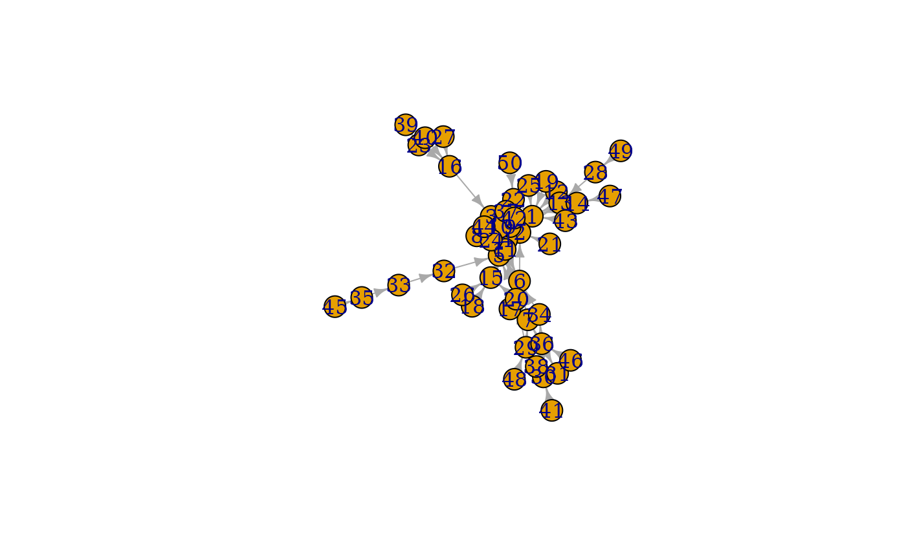

This is a growing network model, which resembles of how the forest fire spreads by igniting trees close by.
Arguments
- nodes
The number of vertices in the graph.
- fw.prob
The forward burning probability, see details below.
- bw.factor
The backward burning ratio. The backward burning probability is calculated as
bw.factor*fw.prob.- ambs
The number of ambassador vertices.
- directed
Logical scalar, whether to create a directed graph.
Details
The forest fire model intends to reproduce the following network characteristics, observed in real networks:
Heavy-tailed in-degree distribution.
Heavy-tailed out-degree distribution.
Communities.
Densification power-law. The network is densifying in time, according to a power-law rule.
Shrinking diameter. The diameter of the network decreases in time.
The network is generated in the following way. One vertex is added at a
time. This vertex connects to (cites) ambs vertices already present
in the network, chosen uniformly random. Now, for each cited vertex \(v\)
we do the following procedure:
We generate two random number, \(x\) and \(y\), that are geometrically distributed with means \(p/(1-p)\) and \(rp(1-rp)\). (\(p\) is
fw.prob, \(r\) isbw.factor.) The new vertex cites \(x\) outgoing neighbors and \(y\) incoming neighbors of \(v\), from those which are not yet cited by the new vertex. If there are less than \(x\) or \(y\) such vertices available then we cite all of them.The same procedure is applied to all the newly cited vertices.
Note
The version of the model in the published paper is incorrect in the sense that it cannot generate the kind of graphs the authors claim. A corrected version is available from http://www.cs.cmu.edu/~jure/pubs/powergrowth-tkdd.pdf, our implementation is based on this.
References
Jure Leskovec, Jon Kleinberg and Christos Faloutsos. Graphs over time: densification laws, shrinking diameters and possible explanations. KDD '05: Proceeding of the eleventh ACM SIGKDD international conference on Knowledge discovery in data mining, 177--187, 2005.
See also
barabasi.game() for the basic preferential attachment
model.
Random graph models (games)
erdos.renyi.game(),
sample_(),
sample_bipartite(),
sample_correlated_gnp(),
sample_correlated_gnp_pair(),
sample_degseq(),
sample_dot_product(),
sample_fitness(),
sample_fitness_pl(),
sample_gnm(),
sample_gnp(),
sample_grg(),
sample_growing(),
sample_hierarchical_sbm(),
sample_islands(),
sample_k_regular(),
sample_last_cit(),
sample_pa(),
sample_pa_age(),
sample_pref(),
sample_sbm(),
sample_smallworld(),
sample_traits_callaway(),
sample_tree()
Author
Gabor Csardi csardi.gabor@gmail.com
Examples
g <- sample_forestfire(10000, fw.prob = 0.37, bw.factor = 0.32 / 0.37)
dd1 <- degree_distribution(g, mode = "in")
dd2 <- degree_distribution(g, mode = "out")
plot(seq(along.with = dd1) - 1, dd1, log = "xy")
#> Warning: 1 x value <= 0 omitted from logarithmic plot
#> Warning: 627 y values <= 0 omitted from logarithmic plot
points(seq(along.with = dd2) - 1, dd2, col = 2, pch = 2)
